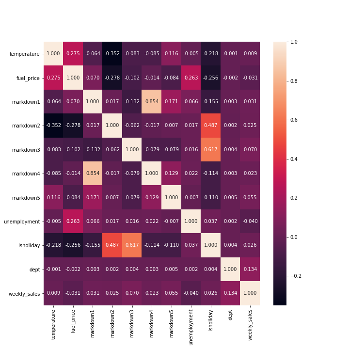

Finding Meaningful Features
The values show the correlation score between the row and column at each point. Values will range from 1 (very strong positve correlation, as one goes up, the other tends to, too) to -1 (very strong negative correlation, one goes up will tend to push the other down, or vice-versa), via 0 (no relationship). In our dataset, we can see that the 'MarkDown' and the 'Unemployment' being the most correlated and anti-correlate variables respectively.

After training and testing our model, we can see the traning, testing and R2 scores are low. One possible explantation for this is the presence of several anti-correlated variables as seen in the heatmap. The presence of temperature, fuel price and unemployment are negatively effecting the model since these variables have almost no relation to weekly sales. From this, we can confidently eliminate these variables from further analysis.